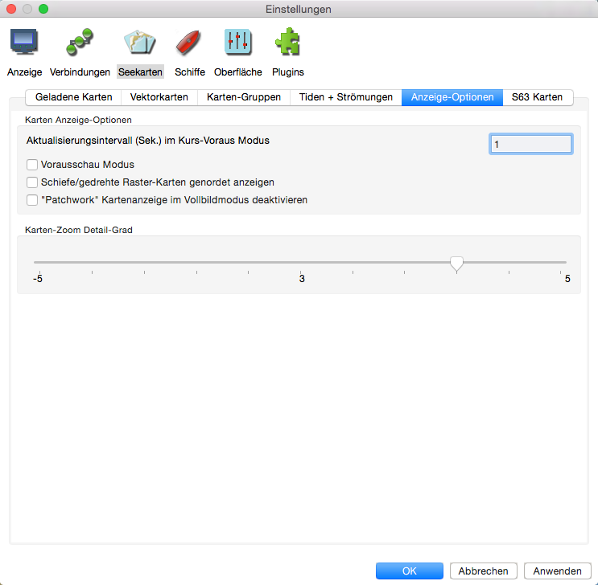

Einstellungen Seekarten
Lasche "Geladene Karten"

Das wird im Detail hier behandelt.
Lasche "Vektorkarten"

Mehr über Vektorkarten siehe hier.
Lasche "Karten-Gruppen"

Mehr über Karten-Gruppen siehe hier.
Lasche "Tiden + Strömungen"

Aktive Datensätze Die verwendeten Tiden-/Stromdaten. Siehe unter Tiden und Strömungen. Zu dem mitgeliefertem Datensatz können mit dem Button "Datensatz hinzu..." weitere eigene Datensätze hinzugefügt werden. Es öffnet sich ein Datei-Fenster zur Auswahl der Datei.
Mehr über Tiden und Strömungen siehe hier.
Lasche "Anzeige-Optionen"

Aktualisierungsintervall (Sek.) im Kurs-Voraus Modus Bestimmt, wie oft die gesamte angezeigte Karte aktualisiert werden soll. Die Eigenes-Schiff und AIS-Symbole werden weiterhin jede Sekunde aktualisiert. Der Standard Wert ist 15 Sekunden.
Vorausschau Modus Siehe hier.
Schiefe/gedrehte Raster-Karten genordet anzeigen Korrigiert schiefe (nicht genordete) Raster-Karten. Ein typisches Beispiel dafür sind die Intra-Coastal-Waterway (ICW) Karten. Weiteres hier.
Quilting "Patchwork" Kartenanzeige im Vollbildmodus deaktivieren Standardmäßig werden alle sichtbaren Karten mit passender Skalierung im "Quilting" verwendet. Mit dieser Aktivierung werden nur Karten, die die Mitte des Bildschirms betreffen, für das "Quilting" benutzt. Das ist leichter für einige Systeme und gibt mitunter eine Leistungssteigerung.
Karten-Zoom Detail-Grad Der Schieberegler beeinflußt das Verhalten beim Vergrößern von Karten. Vorsicht: Übervergrößerte Karten sind nicht mehr genau.
Lasche "S63 Karten"
Diese Lasche erscheint nur, wenn das S63 Plugin aktiviert ist. Informationen zu S63 auf der o-charts.org Homepage.